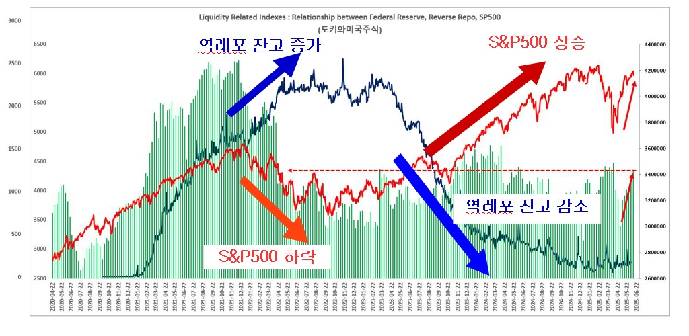

Welcome to 'Wondeng's U.S. Monetary Liquidity Status.' This website provides visualizations of the complex monetary liquidity flows in the U.S. market through real-time, data-driven animations for investors and anyone interested in the economy.
By intuitively understanding how money flows between the U.S. Federal Reserve (FED), the government (TGA), Money Market Funds (MMF), and the market, we aim to help you more easily grasp the effects of interest rate changes, quantitative easing, and tightening policies to make wise investment decisions.
Key Features
Real-time Liquidity Flow: Easily track the flow of money by visualizing the monthly fund movement between each economic entity (government, central bank, MMF, market) with animations.
Key Interest Rate Status: Check important market interest rate indicators like SOFR, EFFR, and Treasury yields in real-time and understand their significance.
Detailed Data Graphs: Analyze over 30 key economic indicators, such as TGA balance, M2 money supply, and the S&P 500 index, with detailed graphs by period. Descriptions (Info) for each indicator are also provided.
Now, explore the complex flow of the economy easily through the visualizations below.
(Tap the economic indicator for a detailed explanation!)
Central Bank FED
U.S. Government
U.S. Market
MMF (Money Market Fund)
Source: FRED, Office of Financial Research (OFR)
How to Interpret the Data
The animation on the main page represents the 'change in fund flow over the last week' between each entity. The meaning of the numbers is as follows:
(Government's) TGA Balance (- Negative): Means the government is injecting money into the market through reduced Treasury issuance or increased fiscal spending. (Liquidity Supply)
(Government's) TGA Balance (+ Positive): Means the government is absorbing money from the market by collecting more taxes or increasing Treasury issuance. (Liquidity Absorption)
Fed (FED) Liquidity (- Negative): Means the Fed is withdrawing money from the market through quantitative tightening (asset sales), etc. It also signifies liquidity absorption as financial institutions deposit funds in the Fed's reverse repo facility. (Liquidity Absorption)
Fed (FED) Liquidity (+ Positive): Means the Fed is supplying money to the market through quantitative easing (asset purchases), etc. It also signifies liquidity supply as financial institutions move funds from the Fed's reverse repo back into the market. (Liquidity Supply)
MMF → FED (+ Positive): MMFs are depositing funds into the Fed's Reverse Repo (RRP), leading to the absorption of market liquidity.
MMF → FED (- Negative): MMFs are withdrawing funds previously deposited in the Fed's RRP, supplying liquidity to the market.
MMF → Market (+ Positive): MMFs are purchasing market assets like Treasuries and corporate bonds, thus supplying liquidity to the market.
MMF → Market (- Negative): Market participants are investing in MMF funds, causing market liquidity to be absorbed into MMFs.
In conclusion, if the total sum of money flowing into the 'Market' (Net Market Flow) is blue and negative (-), it can be interpreted as decreasing market liquidity, and if it is red and positive (+), it means liquidity is becoming abundant.
Wondeng's U.S. Monetary Liquidity Status
Grasp U.S. Monetary Liquidity at a Glance!
Key Features
Real-time Liquidity Flow: Easily track the flow of money by visualizing the monthly fund movement between each economic entity (government, central bank, MMF, market) with animations.
Key Interest Rate Status: Check important market interest rate indicators like SOFR, EFFR, and Treasury yields in real-time and understand their significance.
Detailed Data Graphs: Analyze over 30 key economic indicators, such as TGA balance, M2 money supply, and the S&P 500 index, with detailed graphs by period. Descriptions (Info) for each indicator are also provided.
Now, explore the complex flow of the economy easily through the visualizations below.
(Tap the economic indicator for a detailed explanation!)
Central Bank FED
U.S. Government
U.S. Market
Commercial Banks
Source: FRED
Guide to Key Interest Rate Indicators
Reverse Repo Rate: The rate the Fed pays when borrowing funds from financial institutions, serving as a benchmark for absorbing market liquidity.
Fed Discount Rate: The interest rate the Fed charges commercial banks for loans, determining the funding cost for financial institutions.
EFFR Rate: The effective interest rate at which banks lend funds to each other, indicating the direction of the Fed's monetary policy.
SOFR Rate: The rate for overnight loans collateralized by Treasuries, directly reflecting the liquidity situation in the short-term funding market.
3-Month Treasury Bill Rate: The yield on 3-month Treasury bills, indicating short-term market interest rates and inflation expectations.
2-Year Treasury Note Rate: The yield on 2-year Treasury notes, reflecting the medium-term economic outlook.
10-Year Treasury Note Rate: The yield on 10-year Treasury notes, a key indicator showing market expectations for long-term economic growth and inflation.
SOFR-EFFR Spread: The difference between secured (SOFR) and unsecured (EFFR) short-term lending rates, indicating market liquidity and credit risk status. A widening spread can signal liquidity tightening.
U.S. Yield Curve Spread: A leading indicator of economic recession. An inversion, where long-term rates fall below short-term rates, suggests a potential future economic slowdown.
U.S. Fund Status
Key indicators showing how much money is currently held by the U.S. government, banks, and the market.
Interest Rates
Interest rate indicators that represent the cost of funds in the market, used to predict the health and future direction of the economy.
Liquidity
Indicators that measure the total amount of money circulating in the market, allowing for an assessment of inflation and economic activity levels.
Asset Prices
Representative stock market indices that reflect the overall health of the economy and investor sentiment.
Leading Indicators
Indicators that help predict the future direction of economic activity, serving as a barometer for consumption and industrial activity.
About Site
'Wondeng's U.S. Monetary Liquidity Status' aims to be a compass that helps you not get lost in the complex world of economic indicators and data. Through real-time updated data, intuitively grasp where the market's money is flowing right now.
Dollar Liquidity Ultimately Determines Stock Prices.
In 2022, as the U.S. Federal Reserve's reverse repo balance increased, the S&P 500 stocks declined, leading to a market crash. Currently, the direction and speed of currency in the U.S. stock market are becoming even more critical. Therefore, "Wondeng's U.S. Monetary Liquidity Status" aims to help you easily predict the flow of liquidity to forecast the stock market's direction and maximize profits.

Key Features
Real-time Liquidity Flow: Easily track the flow of money by visualizing the monthly fund movement between each economic entity (government, central bank, MMF, market) with animations.
Key Interest Rate Status: Check important market interest rate indicators like SOFR, EFFR, and Treasury yields in real-time and understand their significance.
Detailed Data Graphs: Analyze over 30 key economic indicators, such as TGA balance, M2 money supply, and the S&P 500 index, with detailed graphs by period. Descriptions (Info) for each indicator are also provided.
How to Interpret the Data
The animation on the main page represents the 'change in fund flow over the last week' between each entity. The meaning of the numbers is as follows:
(Government's) TGA Balance (- Negative): The government is injecting money into the market through reduced Treasury issuance or increased fiscal spending. (Liquidity Supply)
(Government's) TGA Balance (+ Positive): The government is absorbing money from the market by collecting more taxes or increasing Treasury issuance. (Liquidity Absorption)
Fed (FED) Liquidity (- Negative): The Fed is withdrawing money from the market through quantitative tightening (asset sales), etc. (Liquidity Absorption)
Fed (FED) Liquidity (+ Positive): The Fed is supplying money to the market through quantitative easing (asset purchases), etc. (Liquidity Supply)
In conclusion, if the total sum of money flowing into the 'Market' (Net Market Flow) is blue and negative (-), it can be interpreted as decreasing market liquidity, and if it is red and positive (+), it means liquidity is becoming abundant.
Data Source & Update Cycle
Most of the data on this site is based on official data provided by the Federal Reserve Economic Data (FRED) and the Office of Financial Research (OFR). The data is automatically updated daily or weekly according to the release schedule of each indicator.
Now Available as a Website and App!!
Search for "Wondeng's U.S. Monetary Liquidity Status" in your search engine.
Search for "U.S. Money Flow" on the Google Play Store.
U.S. Stock Virtual Investment Simulator
This is a virtual investment simulator based on actual historical U.S. stock data. Precisely calculate investment returns and simulate real-world investment strategies using key economic indicators! By comparing investment performance graphs with key economic indicators like the FED's reverse repo and benchmark interest rates, it provides deep insights into the correlation between economic indicators and investments.
Note: Major U.S. Economic Recessions in the Past
The Great Depression: September 1929 ~ June 1932
Oil Shock and Stagflation: January 1973 ~ October 1974
Black Monday: August 1987 ~ December 1987
Dot-com Bubble Burst: March 2000 ~ November 2001
Global Financial Crisis: December 2007 ~ June 2009
COVID-19 Pandemic: February 2020 ~ April 2020
Inflation and Interest Rate Hikes: January 2022 ~ October 2022